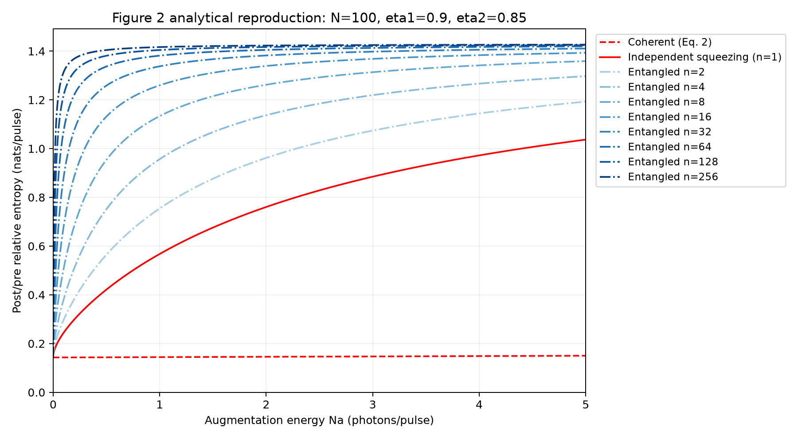
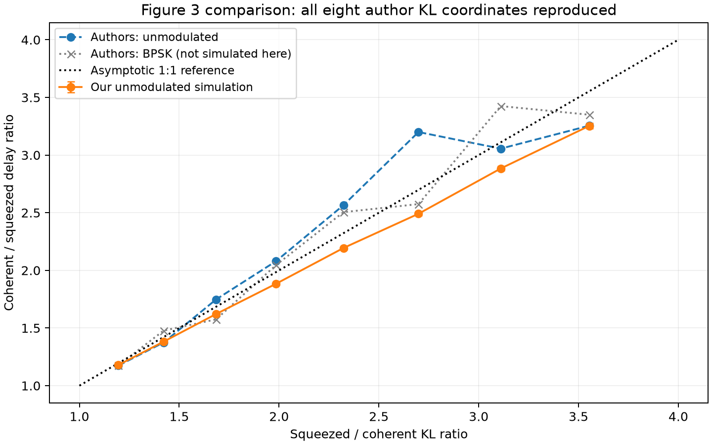
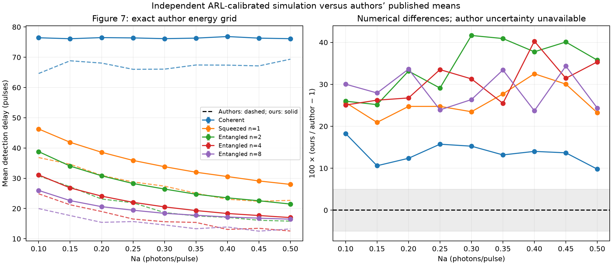
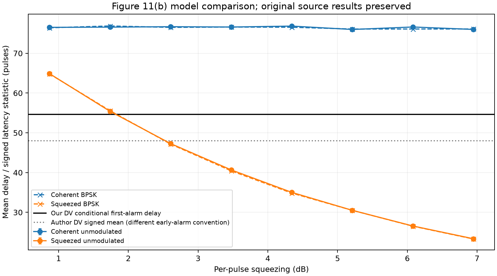
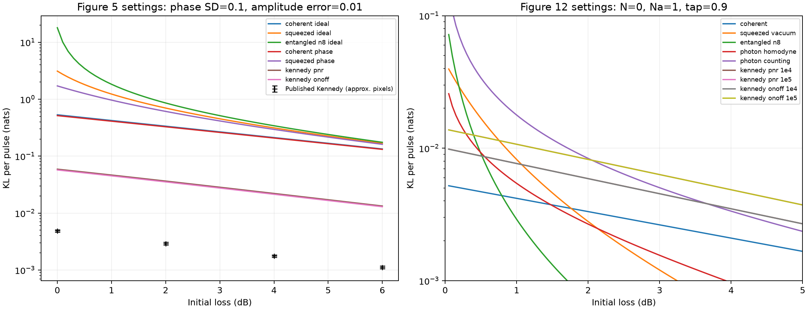
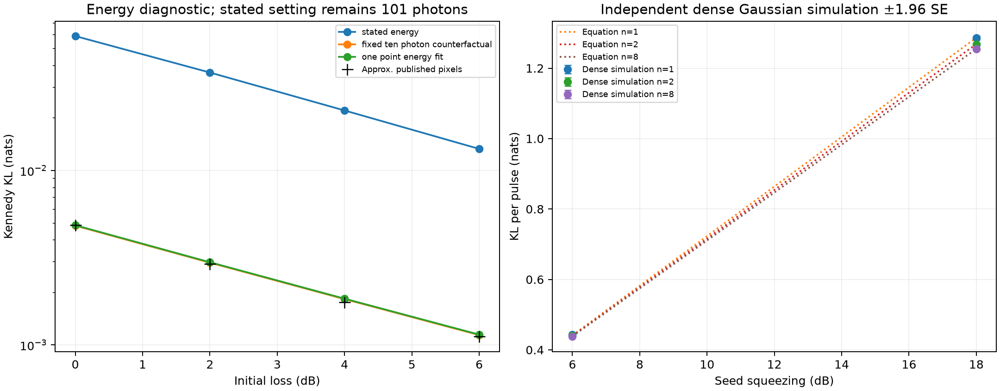

Evidence at a glance
Audit passes support the implementation. They do not prove agreement with the published curves.
Figure-by-figure evidence
| Figure | Status | Implemented | Remaining limit |
|---|---|---|---|
| 1 | Observation models implemented | Coherent, squeezed and entangled transmitter laws. | Hardware schematic, not an optical implementation. |
| 2 | Equations checked | All coherent, squeezed and n=2–256 per-pulse entropy curves. | No original numeric figure array for pointwise comparison. |
| 3 | Author-data difference remains | Eight unmodulated and eight BPSK energy settings; ARL validated. | Delay ratios differ from published data. |
| 4 | Published ordering unresolved | Fixed-seed equations, dense covariance and random checks agree. | Equations give n=1 ≥ n=2; published inset gives n=2 > n=1. |
| 5 | Published Kennedy curve unresolved | Legend settings verified; independent Eq.10 integration and sampling agree. | About 12-fold Kennedy gap; roughly 10-photon diagnostic is not the stated setting. |
| 6 | Receiver laws implemented | Homodyne, photon-resolving and binary receiver statistics. | No optical or electronic hardware implementation. |
| 7 | Author-data difference remains | 45 settings: five detector families at nine energies; ARL validated. | Our mean delays are approximately 13.6–34.4% higher by family. |
| 8–10 | Statistical network checked | BPSK mixtures, displaced squeezed laws, Hadamard covariance propagation. | No capacity-achieving code or physical Green Machine. |
| 11(a) | Equation benchmark checked | Single-photon quadrature law, CDF, sampler and entropy. | 0.206340 agrees with quoted 0.2063; plot uses rounded tap. |
| 11(b) | Latency statistic differs | DV detector independently calibrated; CV and BPSK comparisons saved. | Our conditional first-alarm delay differs from source signed latency mean. |
| 12 | Sparse pixel agreement | Seven curves within 2% at 1 dB; legend settings verified. | Sparse approximate pixels, not full numeric source data. |


How to read these results
Detection delay is conditional on surviving until the change. Early alarms and censored runs are tracked separately. Reported Monte Carlo intervals are approximate. Figure 12 has sparse pixel agreement; Figures 4, 5 and the absolute latency comparisons remain unresolved.
The roughly ten-photon Kennedy comparison is a diagnostic hypothesis. It does not replace the stated bright-pulse model. Robustness extensions, hardware and open research problems are outside the numerical reproduction claim.
Combined saved-evidence audit: PASS, 1572 component checks. Historical random draws were not rerun.
Full report, uncertainty and reproduction commands · Machine-readable results · SHA-256 inventory
Selected comparisons





